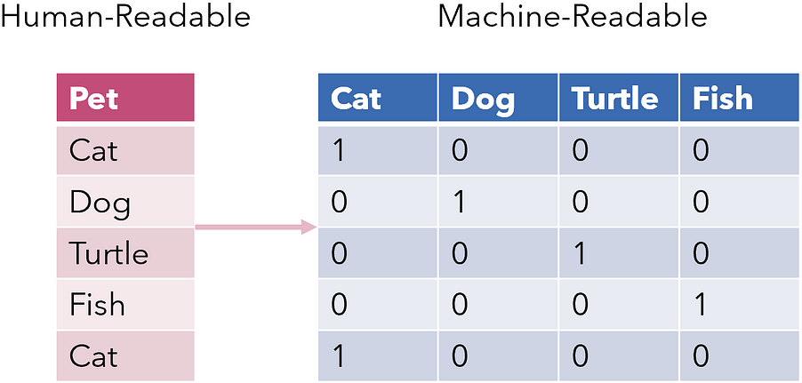

Feature Engineering¶
All of the examples so far assume that you have numerical data in a tidy, [n_samples, n_features] format.
That may be the case when we load data from a SKLearn dataset, but it is not the case in the real world, where
data rarely comes in such a form.
Hence, one of the most important steps in using machine learning in practice is feature engineering: that is, taking whatever information you have about your problem and turning it into numbers that you can use to build your feature matrix.
Note
Feature engineering is a fancy term for "creating new variables from existing variables". For example, if we have a dataset with a column containing the date of birth of a person, we can create a new column containing the age of the person by subtracting the date of birth from the current date.
Note
Proper data cleaning is also an important part of feature engineering. Some common data cleaning tasks include:
- Missing values: Most machine learning algorithms cannot handle missing values. There are several ways to deal with missing values, including removing the observations with missing values, imputing the missing values with the mean or median, or using a machine learning algorithm that can handle missing values.
- Outliers: Outliers are observations that are far away from the rest of the observations. Outliers can have a significant effect on the model, so it is important to detect and (if it is justified to do so) remove them.
Transformers¶
Scikit learn provides classes known as transformers, which are estimators (i.e., they inherit from a
base class called BaseEstimator) that can transform data instead of making predictions.
Note
Transformers are estimators, so they also have the fit method. However, this method is used to
learn the parameters of the transformer (e.g., the mean of the data in a StandardScaler), not to train a model.
They also don't have the predict method, since they don't make predictions. Instead, they have the
transform method, which is used to transform the data.
Transformers are typically used to preprocess the data before training the model, and hence they are an important part of feature engineering.
Note
We'll discuss some examples belows, but bear in mind that it is not necessary to use transformers or Scikit learn to preprocess the data. Many of these transformations can be done "by hand", for example in Pandas, before going into Scikit Learn.
Note
These transformers have nothing to do with the transformers in deep learning.
Standard scaler¶
The StandardScaler is a transformer used to standardize the data before training a model.
It removes the mean of the data and scales it to unit variance, calculating the z-score of each sample in the dataset:
$$
z = \frac{x - u}{s}
$$
where u is the mean of the training samples (or zero if with_mean=False), and s is the standard deviation of
the training samples or one if with_std=False:
from sklearn.preprocessing import StandardScaler
scaler = StandardScaler()
X_train_scaled = scaler.fit_transform(X_train)
Note
The fit_transform method is a combination of the fit and transform methods. It first fits the transformer
to the data (which in this case, although confusing, means computing the mean and std), and then transforms the
data. This is equivalent to calling fit and then transform separately.
Ordinal encoder¶
The OrdinalEncoder is a transformer used to encode categorical features that have a natural ordering as a numeric
array. For example, if we have a categorical feature with three possible values that have a meaningful order,
e.g. low, medium, and high, the ordinal encoding would be:
| low | medium | high |
|---|---|---|
| 0 | 1 | 2 |
from sklearn.preprocessing import OrdinalEncoder
X_train = pd.DataFrame({'feature': ['low', 'medium', 'high']})
encoder = OrdinalEncoder()
X_train_encoded = encoder.fit_transform(X_train)
print(X_train_encoded)
# Output:
[[0.]
[1.]
[2.]]
One-hot encoder¶
The OneHotEncoder is a transformer used to encode categorical features that do not have a natural ordering
as a one-hot numeric array (i.e., a binary array with a single 1 and many 0s).
For example, if we have a categorical feature with three possible values, a, b, and c, the one-hot encoding
would be:
| a | b | c |
|---|---|---|
| 1 | 0 | 0 |
| 0 | 1 | 0 |
| 0 | 0 | 1 |
import pandas as pd
from sklearn.preprocessing import OneHotEncoder
X_train = pd.DataFrame({'feature': ['a', 'b', 'c']})
encoder = OneHotEncoder()
X_train_encoded = encoder.fit_transform(X_train)
print(X_train_encoded.toarray())
# Output:
[[1. 0. 0.]
[0. 1. 0.]
[0. 0. 1.]
Tfidf vectorizer¶
The TfidfVectorizer is a transformer used to convert text data into a numerical feature matrix.
It is a combination of the CountVectorizer and TfidfTransformer transformers.
from sklearn.feature_extraction.text import TfidfVectorizer
X_train = ['This is the first document.',
'This is the second second document.',
'And the third one.',
'Is this the first document?']
vectorizer = TfidfVectorizer()
X_train_encoded = vectorizer.fit_transform(X_train)
Note
You can read more about Tf-idf here.
To see the vocabulary that was learned by the vectorizer, we can use the get_feature_names method:
print(vectorizer.get_feature_names())
# Output:
['and', 'document', 'first', 'is', 'one', 'second', 'the', 'third', 'this']
Types of features¶
The following sections describe a few general tricks of feature engineering.
Categorical features¶
One common type of non-numerical data is categorical data. To use this data in a machine learning model, we need to convert this categorical feature to a numerical feature.
If the categorical feature has no natural ordering, we can use one-hot encoding to convert it to a numerical feature.

If the categorical feature has a natural ordering, we can use ordinal encoding to convert it to a regular number.
Text features¶
Another common type of non-numerical data is text data. To use this data in a machine learning model, we need to convert this text feature to a numerical feature. This can be done using several NLP techniques. Check bag-of-words, TF-IDF, and word embeddings for more information.
Date features¶
Another common type of non-numerical data is date data. To use this data in a machine learning model, we need to convert this date feature to a numerical feature. This can be done by extracting the year, month, day, etc. from the date and using them as numerical features.
Date features are very important in time series, which naturally has seasonality and trends. For this, sometimes it is a good idea to use extra dummy variables to be able to express all dates that are close to each other (e.g., the day of the week, the number of the week, etc.).
Note
An example: we can use the week numbers as features, but with this ordinal encoding we can't express that week 52 and week 1 are actually close to one another. However, we could also add a new feature that is the week number plus 26, and then model might be able to understand that weeks "live" in a circle instead of in a line.
Image features¶
Another common type of data are images. Although they might look like non-numerical data, images are actually matrices of numbers. To use this data in a machine learning, the easiest way is to flatten the image and use the pixels as numerical features (often even deleting the color channels).
Then, we can "spaghettify" the image by flattening the image and converting it to a 1D vector.
Derived features¶
Sometimes, we can create new features from existing features. For example, if we have a dataset with a column containing the date of birth of a person, we can create a new column containing the age of the person by subtracting the date of birth from the current date.
For numerical data, we can often apply mathematical transformations to create new features that have a better behavior for the model, or that change the data distribution to one that is more suitable. This needs to be done on a case-by-case basis, and requires some domain knowledge.
Note
Example: imagine that we have a dataset with a column containing the price of a house. We can create a new column containing the logarithm of the price of the house. This (could) make the data distribution more suitable for the model by reducing the tail of the distribution.
Feature selection¶
In some cases, we might have too many features, which makes the model too complex and costly to maintain. In such cases we will need to select only the most important ones. This can be achieved in several ways:
- With dimensionality reduction techniques, such as PCA.
- With feature importance techniques, such as the SHAP values (and simpler alternatives).
Note
Rules of thumb to know if a feature is important: 1. Add noise to it and see if the model performance decreases. If it does, the feature is probably important. 2. Create new features with values drawn from a random distribution. Then, train a model and scrap all features that perform similarly to the random noise features.